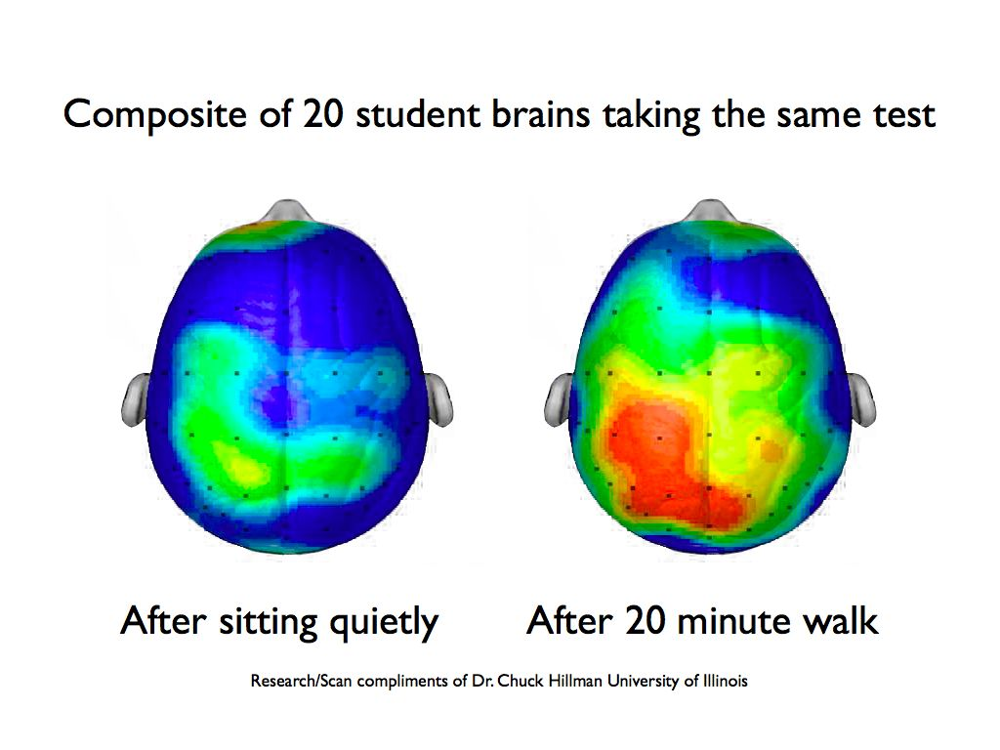

The heavy air of the classroom made you want to go outside. You walk past the gallery and see graphic design students doing strange movements. Is it a performance? No they are releasing stress and tension, while trying to improve their ability to think about climate change. They say they are moving like the wind.
It looks funny, but why would anyone in their right mind do such a thing? And how can you move like something you can't see? Notice how the ppm counter just dropped to 200! that is ice-age levels, these movements must be working!
Brain processing takes up about 20% of our total metabolism through cognitive activities like memory, attention and concentration. This cognition needs a strong flow of fuel (oxygen) to activate and enhance the brain's capacity to perform, learn and get id of waste. So any prolonged sitting and inactivity can lead to negative cognitive consequences. For instance inactivity in childhood has been linked to reduced working memory.

A person's brain does not keep healthy independently, it is the connection with a healthy moving body that can help improve brain performance. Because movement helps the fluctuation of oxygen and lowers co2-levels in our minds.